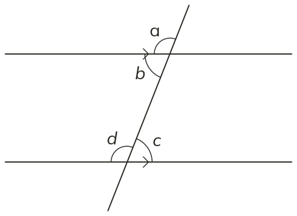
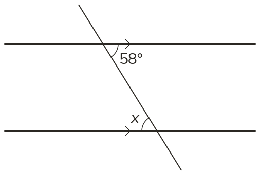
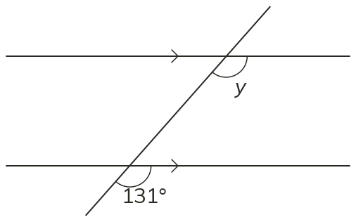
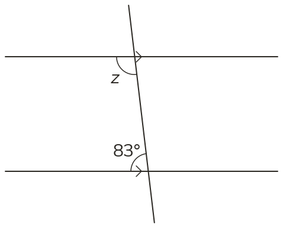

Westonbirt Maths · Parallel Lines and Quadrilaterals
Angles in Parallel Lines
Name: ______________________ Date: ____________
1
Corresponding, alternate or co-interior? (a) a and d (b) b and c (c) b and d
2
Find x, giving a reason.
3
Find y, giving a reason.
4
Find z, giving a reason.
5
Two lines with no arrows are crossed by a transversal. One angle is 95°. Is the angle corresponding to it 95°?
Ext
Two co-interior angles differ by 40°. Find both angles.



